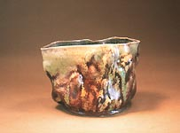

| Georgette Ore y los objetos picaros.
El Peedmont Press, Enero 10, 2001, por Donald
B. Woofin.
Esta pagina tiene imagines detalladas.
Este es el primer capitulo en una serie de artículos de
Don Pilcher sobre algunos de los caracteres que lo han inspirado
y ayudado en la creación de su propio trabajo. Intercambios
son bienvenidos: Don Pilcher:
Georgette Ore y los objetos picaros- Capitulo
1
Georgette Ore es vaga sobre su edad y su pasado, excepto en decir
que ella nació en el sur y creció en el golfo. Adivinando,
uno la coloca en algún lugar entre la edad intermedia y un
temprano retiro, dependiendo de la luz y la hora del día.
Ella ha trabajado en el campo de la alfarería por algún
tiempo, moviéndose frecuentemente y viviendo una vida artística
como una perpetua invitada norteamericana. La señorita Ore
explica que la reciente inclinación en su alfarería
ha sido inspirada por la línea clásica de la película,
“El graduado”donde es sugerido a Benjamín que
el futuro es en el plástico. Ella trata a su arcilla como
si fuera plástico caliente y maleable. Su alfarería
aparece fuera de lo manual aun para los ojos ineptos. Todavía
sobre la reexaminación cuidada, es claro que cada vasija
empieza como un exquisito torneado de piezas alfareras, las cuales
son luego animadas y transformadas por el poder de su imaginación
y sus astutos dedos.
 
La señorita Ore ha permanecido soltera, pero admite estar
a gusto con su nuevo patrón: Bucks hijo. Ellos se conocieron
en el Internet dentro de un Chat de feldespato.
El señor Bucks fundo “los objetos picaros alfarería”
algunos años atrás. Para citar esta empresa ha disfrutado
un no particular suceso. Recientemente alquilo a la señorita
Ore en un intento de tornar “los objetos picaros”en
“bueno…algo deseable”Como la inspiración
de Ore es sobre “plástico”.Bucks dice que mientras
esto puede ser cierto, el ha notado en si mismo un profundo cambio
en el trabajo de Ore desde que ella empezó tomando medicación
prescripta sobre una base diaria (se refiere a la misma forma de
la vasija que la repite diariamente). El también reporta
que ella desde hace tiempo no se queja sobre el calor del estudio.
Que bien, que siempre un caballero, el señor Bucks no ha
tenido comentarios sobre sus astutos dedos.

Ore ha sido interrogada si ella conoce, o si esta relacionada con,
el famoso alfarero norteamericano, George Ohr. Ella ha esto responde
que un lado de su familia tiene una leyenda donde hay una concesión
entre los Ores y los Ohrs. La discrepancia en el deletreado es atribuido
al servicio de inmigración, un sanatorio de tratamiento de
alcohol, o irregulares practicas de voto en un gran país
rural, todo dependiendo en quien es el que cuente la historia. A
lo mejor ella podría ser la sobrina-nieta, una vez quitada
por un segundo matrimonio. Nada para jactarse en ello.
Comentando sobre las similaridades de sus alfarerias, ella observa
que “los objetos picaros”es para George Ohr como Twain
es a Poe. Ella no elabora más allá.
Con una vida invertida en el negocio del arte alfarero, ella piensa
que es maravilloso pero complejo y demandante como la mayoría
de la gente reconoce. Después de todo, ella dice: “no
puedes realmente decir la diferencia entre la teoría de la
narrativa posmoderna y una buena practica irónica”.
Tal vez no hay diferencia. Es solo demasiada ironía. Los
jóvenes artistas y alfareros dibujan la ironía porque
ello a menudo significa el real contenido. Pero después has
vivido suficiente de ello, entonces corres de otra manera, porque
la ironía puede sugerir que la mano de Dios ha repartido
desde arriba las cartas. No es un placentero pensamiento, ello testea
mi teología, quebrando mi corazón y dándome
un dolor de cabeza. Soy mejor pegando arcilla plástica con
mis astutos dedos.
La señorita Ore advierte sus ojos cuando habla sobre ironía.
Uno parte en desear si ella intenta pegar con el señor Bucks.
Continúe...
Sobre Don Pilcher: artista alfarero y autor norteamenticano.
Gano su bachiller en bellas artes en el Instituto de Arte Chouinart,
Los Angeles en 1964, y el master en bellas artes en la Escuela de
Diseño de Rhode Island en 1966. El enseñó en
la Universidad de Illinois en la campaña ubarna desde 1966-99.
Donde es ahora profesor emerito. El produce cerámica torneada
y alterada funcional. Imágenes y texto copyright Don Pilcher.
Contactar:
Rascal Ware Chapter 1/Español
Rascal Ware Chapter 2/Español
Rascal Ware Chapter 3
Rascal Ware Chapter 4
Rascal Ware Chapter 5
Rascal Ware Chapter 6
Más artículos
|


{kind=link}